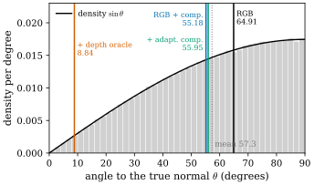
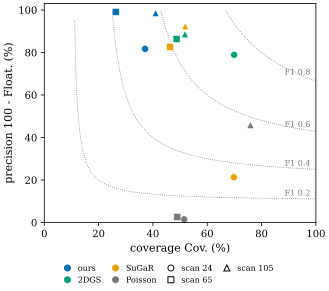

50.5 Implementation and Experiments
Goals
- 논문의 구현(§6)과 frozen protocol이 무엇을 내보내고 무엇을 고정하는지 말할 수 있다.
- 논문의 Table 1–4와 Figure 1–2, 그리고 본문에만 있는 수치(§7.1, §7.3–§7.8)를 모두 읽고, 각 수치가 앞 절의 어느 주장을 지지하는지 연결할 수 있다.
- 방법이 이긴 칸과 이기지 못한 칸, 정의되지 않은 양과 서로 맞지 않는 수치를 가려낼 수 있다.
Prerequisites
- floater, coverage, phantom collision의 뜻(Section 50.1)과 hybrid bundle의 구성(Figure 50.1.2).
- mass ledger(Definition 50.3.4), metric decomposition과 kernel varifold distance, restricted rendering Jacobian(Proposition 50.4.7, Definition 50.4.9, Definition 50.4.14).
- 비교 대상인 2DGS [Huang24], SuGaR [Guedon24], Poisson reconstruction [Kazhdan06](Section 30.3).
Motivation
앞의 세 절은 논문의 수학을 보았다. 이 절은 그 수학이 실험에서 무엇을 했는지 본다. 논문의 실험은 성격이 조금 특이하다. 저자는 결과를 “최종 복원 순위표가 아니라 asset의 효용과 증거가 닿는 범위에 대한 감사(audit)”로 읽어 달라고 한다. 그래서 이긴 결과만큼 진 결과도 보고하고, 실패한 규칙도 그대로 적는다. 이 절은 논문의 순서(§6, §7.1–§7.8)를 따라 모든 표와 그림의 수치를 옮기고, 수치마다 무엇을 지지하는지와 무엇을 지지하지 않는지를 함께 적는다. 논문의 그림은 옮기지 않고 말로 설명한다. 우리가 다시 계산한 값과 그린 그림은 따로 표시한다.
Implementation (§6)
구현은 새 rasterizer가 아니라 기존 3DGS 학습 pipeline 옆에 붙는 도구 모음(“renderer-adjacent”)이다. 논문이 드는 구성 요소는 다음과 같다.
- PLY reader와 covariance eigensystem 진단.
- Gaussian의 dimensionality label(surface-like, line-like, volumetric. eigenvalue의 비로 나누는 것으로 보인다)과 local patch graph score.
- thinness, support, tangent, shape, symmetry, 실험 단계의 Gauss compatibility 항에 대한 미분 가능한 training hook.
- projection과 patch mesh 추출 utility.
- hybrid asset export: certified patch, attached Gaussian, residual Gaussian, source mapping, 보수적 collision candidate.
- sparse support와 multi-view photometric consistency에 기반한 observation-evidence gate.
설계 원칙은 “근거 없는 기하를 드러나게 한다”이다. 인증되지 않은 영역을 watertight mesh로 덮지 않고 residual Gaussian layer로 남긴다. asset branch는 DTU scan24/65/105의 bundle, GLB packaging, collision과 simplification metric, restricted rendering Fisher 진단, 외부 영역 편집 평가를 포함한다. 결과는 저장소의 branch a5-asset-benchmark-3scene의 “evidence ledger”에서 가져왔다고 적혀 있지만, 공개 코드의 주소는 본문에 없다.
Frozen asset protocol. 하류 검증은 스크린샷 데모가 아니라 asset-benchmark/1.0이라는 고정된 protocol의 PASS/FAIL 검사다. 편집, texture round-trip, (정렬된 ground truth가 있으면) collision을 검사한다. threshold는 평가 설정이 좌우하는 양을 피하도록 정했다고 한다.
- 편집: certified binding은 구성상 leak가 \(0\)이어야 하므로, 정보가 있는 검사는 “같은 장면에서 proximity baseline이 patch boundary를 넘어 실제로 새는가”다.
- texture: seam의 절대 크기는 patch 사이의 실제 색 차이가 좌우하므로, baking이 더한 seam만 재고 round-trip PSNR을 함께 본다.
- collision: tolerance 하나를 빡빡하게 잡으면 그것이 방법 자체의 정확도보다 작을 때 coverage가 낮게 나온다. 그래서 tolerance sweep에서 coverage를 읽고 coverage floor에 도달하는 tolerance를 보고한다.
- threshold를 바꾸면 protocol의 version이 바뀐 것으로 취급한다.
What the Experiments Ask (§7)
§7의 실험은 다섯 질문에 답한다고 한다. (1) conservative 연산자가 refinement로 인한 measure의 drift를 막는가? (2) 어떤 증거 아래에서 compatibility가 쓸모 있는가? (3) 인증된 부분집합이 더 믿을 만한 asset의 뼈대가 되는가? (4) RGB-only의 실패가 identifiability 분석과 맞는가? (5) 실제 장면의 개선이 같은 자원 예산 아래에서 재현되는가? 저자는 “어떤 metric도 보편적인 순위로 쓰지 않는다”고 쓴다. 쓰는 metric과 방향은 다음과 같다.
| metric | better | where |
|---|---|---|
| Chamfer, normal angle, kernel varifold distance | lower | Table 1, §7.1 |
| certified mass coverage | higher | §7.1 |
| DTU accuracy, completeness, overall | lower | Table 2, §7.3 |
| held-out PSNR, SSIM | higher | Table 1, 2, §7.1 |
| edit leakage (non-target motion, contamination) | lower | Table 3, §7.5, §7.7 |
| texture round-trip PSNR, seam PSNR | higher | Table 3, §7.5 |
| collision floater | lower | Table 3, 4, §7.7 |
| coverage, identified area | higher | Table 3, 4 |
| phantom collision | lower | Table 3, §7.7, Fig. 1 |
| non-manifold edges | zero | §7.1, §7.7 |
질문과 절의 대응은 이렇다(우리의 정리). (1)은 §7.1, (2)는 §7.1–§7.3, (3)은 §7.5–§7.7, (4)는 §7.2, §7.3, §7.8, (5)는 §7.3과 Table 2다.
Mechanism Tests (§7.1)
§7.1에는 네 가지 시험이 있다.
Unit test. conservative clone과 split이 total mass, barycenter, 상속된 tangent moment를 수치 정밀도까지 보존하고, prune은 명시적 ledger로 0차 mass를 보존하며 transport 비용과 1차 moment의 bound를 기록한다. 같은 기하에 다른 refinement schedule을 적용하면 명시적 \(q_i\)의 varifold 진단이 opacity를 넓이로 보는 진단보다 안정하다고 한다. 이 비교에는 수치가 없다. 같은 종류의 비교를 Example 50.3.10에서 직접 했다(Figure 50.3.2). 저자는 “이 시험은 연산자를 검증할 뿐 복원 품질을 검증하지 않는다”고 쓴다.
Smoke run. 합성 장면에서 50 iteration을 돌려 공식 3DGS 학습 pipeline에 hook을 달 수 있고 covariance-thinness loss가 미분 가능하며 \(0\)이 아님을 확인한다. median thinness 진단이 약 \(0.371 \to 0.299\), \(r_{23}\)이 약 \(0.903 \to 0.716\)으로 움직인다. 저자는 이것이 “thinness 압력이 작동한다는 증거일 뿐 manifold 복원의 증거가 아니다”라고 쓴다. thinness와 \(r_{23}\)은 정의되지 않았다. 이름으로 보아 \(r_{23}\)은 둘째와 셋째 축의 비(예를 들어 \(\sqrt{\lambda_3/\lambda_2}\))로 보이고, 등방인 초기 Gaussian에서 \(1\)에 가깝게 시작하는 것과 맞는다. 두 값이 “학습 전과 후”인지 “loss 없음과 있음”인지도 적혀 있지 않다. 문맥(“moves from … to”)으로는 50 iteration의 처음과 끝으로 읽힌다.
Analytic sphere checkpoint. 해석적인 sphere에서 offline projection이 fundamental form 진단을 크게 줄인다. 본문의 문장을 표로 옮기면 다음과 같다.
| diagnostic | before | after |
|---|---|---|
| normal angle | 21.84° | 0.96° |
| shape mismatch | 0.383 | 0.113 |
| symmetry residual | 0.364 | 0.029 |
| Gauss residual | 0.300 | 0.112 |
| normal curl | 1.410 | 0.024 |
| Codazzi residual | 0.503 | 0.057 |
여섯 진단이 모두 준다. normal angle은 \(23\)배, normal curl은 \(59\)배 줄었다. 저자는 projection한 field가 같은 MLS support로 만들어졌으므로 이것이 “복원 결과가 아니라 진단의 sanity check”라고 쓴다. 두 가지를 덧붙이자. 첫째, symmetry residual과 normal curl의 값이 다르다(\(0.364\)와 \(1.410\)). 우리의 정식화에서는 둘이 같으므로(Proposition 50.4.3), 구현은 둘을 다르게 정의한 것이다. 둘째, normal angle이 따로 보고되는 것은 residual들이 normal의 0차 어긋남을 보지 못하기 때문이라고 읽을 수 있다(Remark 50.4.5).
Sphere sparse-view asset mechanism test. 적은 view로 본 sphere에서 compatibility pipeline 전체를 켜면 다음과 같다.
| quantity | baseline | full comp. |
|---|---|---|
| certified mass coverage ↑ | 54.95% | 63.44% |
| certified point Chamfer ↓ | 0.24090 | 0.15211 |
| patch-mesh Chamfer ↓ | 0.28287 | 0.16346 |
| held-out PSNR ↑ | 21.4959 | 21.3542 |
| held-out SSIM ↑ | 0.5539 | 0.5395 |
기하는 좋아진다. coverage가 \(8.49\) point 오르고 두 Chamfer가 \(36.9\%\), \(42.2\%\) 준다. 내보낸 mesh는 모두 non-manifold edge가 \(0\)이다. 대가는 appearance의 작은 하락이다(PSNR \(-0.142\) dB, SSIM \(-0.0144\)). 그런데 paired confidence interval이 미리 정한 개선 threshold를 넘지 못해 공식 판정은 inconclusive다. 저자는 이것을 asset 추출의 mechanism 증거로만 쓴다. 기하가 좋아졌는데도 논문 스스로 개선이라고 판정하지 않은(inconclusive) 칸이다.
The Identifiability Ladder (§7.2, Table 1)
Table 1은 해석적인 평면 장면에서 1500 step 학습하며 요소를 하나씩 더한 “사다리”다. RGB만, compatibility loss 추가(comp.), adaptive compatibility(adapt. comp., 정의 없음), 정확한 depth 조건(depth oracle) 순서다. 캡션은 “PSNR을 빼고 낮을수록 좋다. RGB-only compatibility는 도움이 되지만 depth로 고정한 기하와의 차이를 메우지 못한다”이다.
| method | Cham. ↓ | Norm. ↓ | Varif. ↓ | PSNR ↑ |
|---|---|---|---|---|
| RGB | 0.05946 | 64.91 | 0.19335 | 28.017 |
| RGB + comp. | 0.05011 | 55.18 | 0.15167 | 27.662 |
| + adapt. comp. | 0.04537 | 55.95 | 0.14614 | 30.264 |
| + depth oracle | 0.01885 | 8.84 | 0.06056 | 30.863 |
열은 Chamfer distance, normal angle의 오차(단위와 통계량이 적혀 있지 않다. 도의 평균으로 보인다), kernel varifold distance(Definition 50.4.9, \(\sigma, \tau\) 미보고), held-out PSNR(dB)이다. RGB 행에 대한 변화를 계산하면 다음과 같다(우리의 계산).
- comp.: Chamfer \(-15.7\%\), Varif. \(-21.6\%\), Norm. \(64.91 \to 55.18\), 그러나 PSNR \(-0.355\) dB.
- adapt. comp.: Chamfer \(-23.7\%\), Varif. \(-24.4\%\), PSNR \(+2.247\) dB. Norm.은 comp.보다 조금 나쁘다(\(55.95 \gt 55.18\)).
- depth oracle: Chamfer \(-68.3\%\)(adapt. comp.에 대해서도 \(-58.5\%\)), Varif. \(-68.7\%\), Norm. \(8.84\), PSNR \(+2.846\) dB.
이 표는 Proposition 50.4.7의 분해를 숫자로 보인 것이라고 저자는 읽는다. compatibility는 realizability 항을 줄이지만 ground truth를 고르는 identifiability 항은 관측(depth)이 있어야 줄어든다. 저자는 depth oracle이 공정한 sparse-RGB 방법이 아니라 oracle 진단이라고 분명히 적는다.
Norm. 열은 좀 더 볼 필요가 있다. 방향이 완전히 무작위인 unoriented normal과 진짜 normal 사이의 각 \(\theta \in [0^\circ, 90^\circ]\)는 밀도가 \(\sin\theta\)이고, 평균이 \(1\) rad \(= 57.3^\circ\), 중앙값이 \(60^\circ\)다(Exercise 50.5.3). Figure 50.5.1이 그 distribution 위에 Table 1의 네 값을 그은 것이다. RGB의 \(64.91^\circ\)는 무작위 평균보다 나쁘고, compatibility 뒤의 \(55.18^\circ\), \(55.95^\circ\)도 무작위 평균 바로 아래다. 무작위 normal이 그 각 이내일 확률 \(1 - \cos\theta\)로 말하면 \(0.58\), \(0.43\), \(0.44\)다. depth oracle의 \(8.84^\circ\)만 \(0.012\)로 무작위와 확실히 다르다. Norm.이 unoriented normal 사이 각의 평균이라면, 이 평면 장면에서 RGB-only의 normal은 사실상 정보가 없고 compatibility도 그것을 바꾸지 못했다(우리의 해석). 캡션의 “도움이 되지만 차이를 메우지 못한다”는 이 열에 대해서는 관대한 표현이다.

DTU Matched Diagnostic (§7.3, Table 2)
실제 장면은 DTU [Jensen14]의 scan24, scan65, scan105 세 개다. 먼저 부정적 결과다. 현재의 RGB-only manifold loss는 고정해 둔 세 장면 규칙(같은 densification 조건의 3DGS에 대해 overall의 평균 상대 개선이 \(1\%\) 이상)을 통과하지 못한다. 평균 상대 개선이 \(0.271\%\)다. accuracy는 평균 \(1.98\%\) 좋아지지만 completeness는 \(0.38\%\) 나빠진다. 저자의 해석은 이 loss가 surface의 coverage를 늘리기보다 “국소적인 precision regularizer”처럼 동작한다는 것이다. 장면별 값은 없다.
두 평균의 산술 평균은 \(0.80\%\)이지 \(0.271\%\)가 아니다. DTU의 overall은 accuracy와 completeness의 평균이므로 overall의 상대 변화는 두 상대 변화를 각자의 크기로 가중한 것이다. 세 장면의 무게가 같다고 보면 \(0.271\%\)가 되려면 accuracy의 무게가 \(0.276\), completeness의 무게가 \(0.724\)여야 한다(우리의 계산). 3DGS에서 completeness 오차가 accuracy 오차보다 큰 것과 맞지만, 장면별 값이 없어 확인할 수는 없다.
다음은 fixed RGB-SfM support anchor를 더한 결과다. 이 아이디어를 사후에 발견한 장면인 scan105를 빼고, scan24와 scan65에서 고정된 두 장면 replication을 했다.
| scan | 3DGS | Anch. | gain | ΔPSNR |
|---|---|---|---|---|
| 24 | 1.7163 | 1.6885 | +1.62% | +0.132 |
| 65 | 2.4643 | 2.3577 | +4.32% | +0.297 |
3DGS는 같은 자원 예산의 densification control, Anch.는 anchor와 realizability 제약을 쓴 모델이고, gain은 overall의 상대 개선, ΔPSNR은 held-out PSNR의 변화(dB)다. 검산하면 \((1.7163 - 1.6885)/1.7163 = 1.620\%\), \((2.4643 - 2.3577)/2.4643 = 4.326\%\)이고 평균 \(2.973\%\)는 §8의 “2.97%”와 맞는다. 둘째 값은 반올림하면 \(4.33\%\)이므로 표의 \(4.32\%\)와 마지막 자리가 다르다(반올림 전 값에서 계산했을 수 있다). 두 장면 모두 기하와 PSNR이 함께 좋아진다. 저자의 좁은 주장은 “sparse RGB-SfM support anchor와 realizability 제약이 같은 자원 예산에서 재현 가능한 개선을 줄 수 있다”이다. Proposition 50.4.7의 말로는 anchor가 둘째 항(관측)을 줄이는 신호를 더한 것이다. 장면이 두 개이고 seed 반복이나 신뢰구간이 없다는 점은 따로 기억해 두자.
A Pilot Against SuGaR (§7.4)
같은 기계에서 8GB로 돌린 SuGaR pilot(scan24/65/105)은 한 승자 없이 tradeoff를 보인다고 한다. SuGaR는 scan24와 scan65에서 mesh 기하가 더 강하고, 특히 completeness가 좋다. anchored 3DGS는 held-out rendering 품질을 지키고, 더 깨끗한 scan105의 기하에서 더 낫다. SuGaR의 예산을 줄인 pilot이므로 진단용 비교이고, full-budget SuGaR에 대한 우위를 주장하는 데 쓰면 안 된다고 저자가 적는다. 이 절에는 수치가 하나도 없다. 두 장면에서 SuGaR가 기하로 이겼다는 것은 이기지 못한 칸으로 기록해 둔다.
The Certified Asset Benchmark (§7.5, Table 3)
주된 asset 결과는 frozen CPU protocol asset-benchmark/1.0을 세 장면에 돌린 것이다. bundle마다 certified open patch, source-ID mapping, attached appearance Gaussian, residual Gaussian, 보수적 collision candidate, manifest가 들어 있다. observation gate는 일부러 보수적이다. patch의 약 \(42\)–\(58\%\), 넓이로는 대략 \(50\)–\(62\%\)만 승인되고 나머지는 residual splat으로 남는다.
| quantity | scan24 | scan65 | scan105 |
|---|---|---|---|
| ID area ↑ | 54.2% | 49.5% | 61.9% |
| floater ↓ | 18.25% | 0.87% | 1.54% |
| phantom ↓ | 0.10% | 0.00% | 0.00% |
| tex. dB ↑ | 30.11 | 35.34 | 33.70 |
| ext. move ↓ | 0.36% | 0.95% | 0.66% |
캡션은 “identification은 일부러 보수적이고, 나머지 열은 승인된 patch가 쓸 만한 asset처럼 동작하는지를 잰다”이다. ID area는 gate가 승인한 넓이의 비율(분모가 Gaussian 쪽 총 mass인지 surface 넓이인지는 적혀 있지 않다), floater와 phantom은 Section 50.1의 뜻, tex. dB는 patch texture round-trip PSNR(초록의 30.1/35.3/33.7), ext. move는 아래 외부 target을 옮겼을 때 움직인 non-target source mass의 비율이다. floater는 Table 4의 ours 값(18.3/0.9/1.5)을 둘째 자리까지 쓴 것과 일치한다. scan24의 floater \(18.25\%\)가 다른 두 장면(\(1\%\) 안팎)보다 훨씬 크다.
Coverage는 recall 쪽 진단이다. 저자는 coverage를 정답성 점수로 보지 않는다. watertight나 TSDF 추출은 미지의 영역을 닫아 ground truth를 더 많이 덮지만, 동시에 빈 공간이나 관측하지 않은 공간에 충돌 기하를 만든다. 그래서 낮은 coverage는 인증의 비용을 드러내는 것이고, 높은 coverage는 floater와 phantom이 낮을 때만 쓸 만한 asset의 근거가 된다.
External region annotation. 편집 대상을 자기 patch ID로 정의하면 결과가 정의에서 바로 나오므로, 그것을 피하려고 외부 작업자가 Blender에서 각 장면의 certified_patches.ply에서 연속 영역 하나를 기하 외형만 보고 골랐다. 각 외부 target을 \(50\%\) 이상 겹치는 certified patch로 근사하고 target bounding box 대각선의 \(0.1\)배만큼 translation했다.
| quantity | scan24 | scan65 | scan105 |
|---|---|---|---|
| selected vertices | 1,759 | 1,805 | 1,932 |
| IoU | 0.274 | 0.525 | 0.525 |
| precision | 0.619 | 0.678 | 0.684 |
| recall | 0.329 | 0.700 | 0.694 |
| moved, certified | 0.36% | 0.95% | 0.66% |
| moved, nearest-radius | 22.3% | 43.9% | 19.2% |
| contaminated, nearest-radius | 24.2% | 45.4% | 20.4% |
IoU는 precision과 recall에서 \(1/(1/p + 1/r - 1)\)로 다시 계산하면 \(0.2736\), \(0.5253\), \(0.5255\)로 보고값과 맞는다(Exercise 50.5.2). certified binding은 non-target mass를 \(1\%\) 미만으로 움직이고 residual layer의 오염이 \(0\)이다. nearest-radius baseline은 \(19\)–\(44\%\)를 움직이고 \(20\)–\(45\%\)를 오염시킨다. 저자가 말하는 이 결과의 범위는 “patch 근사 뒤의 보수적 binding”이지 오차 없는 semantic segmentation이 아니다. 특히 scan24는 recall이 \(0.329\)로 patch 단위의 under-coverage가 드러난다. 외부 target도 Manifold-GS 자신의 출력 위에서 골랐다는 점, baseline이 proximity selection 하나라는 점도 함께 기억해 두자.
Texture. scan105에서 noisy SH-DC 색으로 bake하면 seam PSNR이 \(12.5\) dB이고, multi-view photometric 평균 색으로 바꾸면 \(18.36\) dB로 오른다. 두 경우 모두 bake한 seam이 raw cross-boundary 색 차이가 정하는 upper bound에 가까우므로, 남은 seam은 charting의 문제가 아니라 주로 색 출처의 한계라고 저자는 읽는다. chart를 하나만 쓰는 ablation은 같은 texel 예산에서도 patch마다 chart를 쓰는 것보다 \(6\)–\(15\) dB 뒤진다. tangent chart 하나로는 굽은 물체를 projection의 붕괴 없이 parametrize할 수 없기 때문이다(Section 31.6).
Collision Precision (§7.6, Table 4)
certified collision candidate를 Poisson-from-3DGS, SuGaR의 native culled mesh, 공식 2DGS 30k의 TSDF mesh와 비교한다. 모두 같은 ground truth 정렬과 같은 collision-vs-GT evaluator를 쓴다. DTU의 STL mesh는 전처리의 scale_mat으로 Gaussian의 coordinate system에 결정론적으로 옮기고 ICP는 쓰지 않는다.
| scan | method | Float. ↓ | Cov. ↑ | F1* |
|---|---|---|---|---|
| 24 | ours | 18.3 | 37.1 | 0.510 |
| 24 | 2DGS | 21.1 | 69.9 | 0.741 |
| 24 | SuGaR | 78.7 | 69.8 | 0.326 |
| 24 | Poisson | 98.5 | 51.5 | 0.029 |
| 65 | ours | 0.9 | 26.3 | 0.416 |
| 65 | 2DGS | 13.7 | 48.7 | 0.623 |
| 65 | SuGaR | 17.4 | 46.3 | 0.593 |
| 65 | Poisson | 97.4 | 49.0 | 0.049 |
| 105 | ours | 1.5 | 41.0 | 0.579 |
| 105 | 2DGS | 11.4 | 51.8 | 0.654 |
| 105 | SuGaR | 7.7 | 51.9 | 0.664 |
| 105 | Poisson | 54.1 | 75.9 | 0.572 |
Float.은 후보 collision surface(넓이로 sample한 점) 가운데 ground truth에서 tolerance보다 먼 부분의 비율(\(\%\))로 precision의 반대이고, Cov.는 ground truth 가운데 후보에서 tolerance 안에 있는 부분의 비율로 recall이다. 논문은 “area-sampling evaluator”라고만 쓰므로 이 정의는 이름과 캡션에서 읽은 것이다. 캡션은 “낮을수록 좋다. ours의 coverage가 낮은 것은 일부러 고른 보수적인 precision–coverage tradeoff다”이다.
이긴 칸부터 보자. ours는 세 장면 모두에서 floater가 가장 낮다. scan65(\(0.9\) 대 2DGS의 \(13.7\))와 scan105(\(1.5\) 대 2DGS의 \(11.4\))에서는 2DGS와의 차이가 크고, 초록의 “두 장면에서 큰 차이”가 이것이다. scan105에서 다음으로 낮은 것은 SuGaR의 \(7.7\)이다. Poisson은 scan24와 scan65에서 floater가 \(97\)–\(99\%\)로, 후보 surface가 거의 전부 ground truth 밖에 있다.
Figure 50.5.2는 Table 4를 precision–coverage 평면의 점으로 그린 것이다. 오른쪽 위로 갈수록 좋다. ours(파랑)는 위쪽 왼편, 곧 precision이 높고 coverage가 낮은 곳에 모인다. 2DGS(초록)는 그 오른쪽 아래, SuGaR(노랑)는 장면에 따라 흩어지고, Poisson(회색)은 scan24와 scan65에서 바닥에 붙는다. 회색 점선은 F1이 같은 곡선이다. 어느 방법도 모든 장면에서 나머지 모든 방법의 오른쪽 위에 있지는 않고, 특히 ours와 2DGS는 어느 장면에서도 한쪽이 다른 쪽의 오른쪽 위에 있지 않다(한 장면 안에서 한 방법이 다른 방법의 오른쪽 위에 있는 경우는 있다. 예를 들어 scan24에서 2DGS는 SuGaR와 Poisson의 오른쪽 위에 있다). 이것이 저자가 말하는 “coverage-vs-precision frontier의 서로 다른 점”이다.

편집 축. 2DGS mesh는 certified patch와 source binding이 없으므로 구조적 편집의 baseline으로 쓰지 않는다. 편집 축의 비교 대상은 watertight Poisson과 SuGaR mesh인데, 이들은 가장 큰 connected component가 삼각형의 \(97.5\)–\(99.5\%\)를 차지해서 부분 영역을 편집할 자연스러운 boundary가 없다. 결국 proximity selection, 곧 위의 새는 baseline으로 돌아간다. Manifold-GS의 출력은 세 장면에서 관측이 지지하는 편집 단위 patch를 \(381\)–\(402\)개 내놓는다고 한다.
Simplification and Two Demonstrations (§7.7, Fig. 1–2)
asset이 흔한 후처리를 견디는지 보려고 네 방법에 같은 Open3D cleanup과 quadric decimation(약 5k face 목표)을 적용했다.
| method | scan24 | scan65 | scan105 |
|---|---|---|---|
| ours | 18.55 | 0.81 | 1.42 |
| 2DGS | 18.87 | 12.21 | 10.12 |
| SuGaR | 78.89 | 17.16 | 7.46 |
| Poisson | 98.51 | 97.36 | 52.39 |
단순화 전(Table 4)과 비교하면 모든 방법이 거의 그대로이고, 2DGS는 오히려 조금 좋아진다(\(21.1 \to 18.87\), \(13.7 \to 12.21\), \(11.4 \to 10.12\)). coverage는 원래 mesh에 비해 \(1.0\), \(0.2\), \(0.8\) point만 떨어지고 모든 출력의 non-manifold edge가 \(0\)이라고 한다(coverage 문장이 ours에 대한 것인지는 문맥상 그렇게 보이지만 분명하지 않다). 저자는 triangle 품질이 더 낫다고 주장하지 않는다. 일부 mesh 품질 통계에서는 2DGS와 Poisson의 삼각형이 더 고르다. ours가 열린 patch의 boundary를 일부러 보존하기 때문이다.
Phantom-collision probe. collision mesh가 막는 빈 공간 probe의 비율이 ours \(0.00\)–\(0.10\%\), SuGaR \(0.05\)–\(3.58\%\), Poisson \(2.90\)–\(6.50\%\)다. 2DGS의 phantom 값은 보고되지 않았다.
논문의 Figure 1(scan24의 collision cross-section). 가로로 패널 셋이고 전체 제목은 “cross-section slab(ground truth 회색, 후보 빨강). 회색 밖의 빨강이 phantom collision surface”다. 패널은 왼쪽부터 ours(phantom 0.1%), Poisson(6.5%), SuGaR(3.6%)이다. 캡션은 SuGaR를 Poisson보다 먼저 서술해서 패널 순서와 다르다. 축은 slab 안 점들의 2D 좌표(장면을 정규화한 좌표로 보인다)이고 세 패널이 세로축을 공유한다. 회색 ground truth는 원점 근처의 작은 영역으로, 위쪽의 평행사변형 모양 조각과 그 아래로 이어지는 가는 띠로 보인다. ours의 패널에서는 가는 빨간 곡선이 평행사변형의 아래 가장자리에서 시작해 그 가는 띠를 따라 내려간다. 빨간 점이 굵게 그려져 아래의 회색 띠를 대부분 덮으므로(띠의 가장자리에 회색이 조금 비친다), 그림만으로는 빨강이 ground truth 위에 있는지 확인하기 어렵다. Poisson은 빨간 곡선이 ground truth 훨씬 밖으로 길게 뻗고 여러 번 꼬인다. watertight 재구성이 빈 공간을 닫으며 만든 가짜 surface다. SuGaR는 ground truth 아래쪽에 두꺼운 빨간 덩어리와 떨어진 조각들이 있다. 그림의 scan24 값(0.1, 6.5, 3.6)은 캡션의 세 장면 범위의 위쪽 끝과 같으므로 scan24가 세 방법 모두에서 가장 나쁜 장면으로 보인다. 그림은 한 장면의 한 cross-section이고 2DGS가 없다. 메시지는 Figure 50.1.1의 장난감과 같다.
Semantic part edit와 논문의 Figure 2(scan105). 본문은 certified patch \(30\)개로 된 cluster를 회전하면 certified binding에서는 non-target source mass가 전혀 움직이지 않고, proximity binding은 이웃 vertex \(3{,}847\)개(\(19.7\%\))를 끌고 간다고 쓴다. Figure 2는 이것을 패널 둘로 보인다. 제목은 “scan105, 2287-vertex 부분을 35° 회전(파랑이 움직이고 빨강은 부수적 누수)”이고, 왼쪽 certified binding은 leak \(0.00\%\), 오른쪽 proximity binding은 leak \(19.72\%\)(3,847 vertices)다. 회색은 그대로 있는 점, 파랑은 편집 대상, 빨강(오른쪽에만)은 “움직이면 안 되는데 움직인 점”이다. 오른쪽에서는 파란 영역을 둘러싼 넓은 빨간 영역이 함께 끌려가 파랑이 거의 가려진다. 세 가지를 짚자.
- 본문의 “30 certified patches”와 그림의 “2287-vertex part”가 같은 편집인지 명시되어 있지 않다.
- \(3847/0.1972 \approx 19{,}508\)이므로 \(19.72\%\)의 분모는 약 \(1.95\)만 vertex다. 본문은 분모를 “source geometry”라고만 한다. 전체 vertex인지 non-target vertex인지는 논문에 적혀 있지 않다.
- 이 target은 certified patch로 정의했으므로 certified 쪽의 leak \(0\)은 구성상 당연하다. 저자도 frozen protocol에서 이 점을 인정한다. 자기 출력에 기대지 않는 증거는 외부 target의 ext. move(Table 50.5.7)다.
bundle은 patch마다 색을 칠한 certified geometry와 투명한 collision proxy node를 가진 GLB로도 패키징된다.
Restricted Rendering Fisher Diagnostics (§7.8)
asset branch는 승인된 patch에 대해 restricted rendering Fisher/Jacobian 진단도 계산한다. appearance를 고정했을 때 각 patch를 locally supported, weak, insufficient-view로 나눈다.
| scan | supported | weak | insuff. | accepted |
|---|---|---|---|---|
| 24 | 165 | 19 | 0 | 184 |
| 65 | 146 | 17 | 1 | 164 |
| 105 | 210 | 24 | 0 | 234 |
세 칸의 합이 accepted 수와 맞고, supported의 비율은 \(89.7\%\), \(89.0\%\), \(89.7\%\)다. 저자는 이 certificate가 “국소적인 RGB 민감도의 순위이지 전역 RGB-only 복원의 증명이 아니다”라고 쓴다. ground truth를 읽기만 하는 진단이 그 한계를 확인한다. scan24의 floater patch는 깨끗한 patch보다 Fisher의 median이 낮지만, scan105의 floater는 supported로 표시될 수 있다. 그래서 이 진단은 collision-vs-GT 평가를 보완할 뿐 대체하지 않는다.
세 가지를 덧붙이자(우리의 해석). 첫째, “appearance를 고정했을 때”의 Fisher는 Definition 50.4.14의 restricted Jacobian이 아니라 appearance를 quotient하지 않은 \(J_\gamma^{\mathsf T}J_\gamma\)이다. 이것은 색과 기하가 서로를 흉내 내는 모호함을 보지 못하므로 언제나 낙관적이다(Example 50.4.15의 카메라 하나). floater가 supported로 표시되는 것과 맞는 성질이다. 둘째, supported와 weak를 나누는 기준이 적혀 있지 않다. 셋째, 승인된 patch의 수가 다른 곳과 맞지 않는다. §7.6은 “381–402개의 편집 가능한 patch 단위”를, §7.8은 승인된 patch 164–234개를 말한다. 단위가 다르거나 Fisher 평가 대상이 일부일 수 있지만 논문에는 설명이 없다. 한 가지 읽기가 수치와 잘 맞는다. §7.5는 “patch의 약 \(42\)–\(58\%\)가 승인된다”고 하는데, \(381\)–\(402\)를 gate 전의 전체 patch 수로 보면 \(164/390 \approx 42\%\), \(234/402 \approx 58\%\)처럼 승인 비율의 범위가 그대로 나온다(scan24의 \(184\)는 \(46\)–\(48\%\)). 그렇다면 §7.6의 “관측이 지지하는 편집 단위”라는 표현은 gate를 통과하지 못한 patch까지 센 것이 된다(우리의 추측).
Summary
- 구현은 3DGS 옆에 붙는 도구 모음이고, 결과는 frozen protocol
asset-benchmark/1.0의 PASS/FAIL로 정리된다. 재현에 필요한 많은 설정(\(\sigma, \tau\), threshold, \(q_i\)의 규칙, residual의 공식, seed)이 보고되지 않았다. - mechanism(§7.1): ledger의 unit test는 수치 없이, sphere checkpoint는 같은 MLS support의 sanity check로, sparse-view sphere는 기하가 좋아졌지만 판정이 inconclusive로 보고된다.
- Table 1: compatibility는 Chamfer와 Varif.를 \(16\)–\(24\%\) 줄이지만 normal angle은 무작위 수준(\(55\)–\(65^\circ\))에 머물고, depth oracle만 그것을 바꾼다(Figure 50.5.1). DTU에서 RGB-only loss는 규칙을 통과하지 못하고(\(0.271\%\)), RGB-SfM anchor를 더하면 두 장면에서 \(1.62\%\), \(4.32\%\) 좋아진다.
- asset(Table 3, 4): floater는 세 장면 모두 가장 낮고 phantom은 거의 \(0\), 외부 target 편집의 누수는 \(1\%\) 미만이다. 그러나 coverage는 모두 가장 낮고, F1로는 2DGS가 모두 앞선다(Figure 50.5.2). SuGaR pilot은 수치가 없고, Fisher 진단은 appearance를 고정한 판이며 floater를 걸러 내지 못한다.
- 정의되지 않은 양(thinness, \(r_{23}\), adapt. comp., Norm.의 단위, “1% bbox”, ID area의 분모)과 맞지 않는 수치(381–402와 164–234, 2287 vertex와 30 patch, 4.326과 4.32)가 있다.
다음 절에서는 논문 §8–§10의 토론과 한계를 정리하고, 앞의 다섯 절을 바탕으로 이 논문을 평가한다. 세 수준(thin covariance, compatibility, identifiability)의 구분과, 이 묶음의 다른 세 논문과의 관계도 본다.
Quick check
Exercise 50.5.1 ★ Table 2에서 scan65의 gain을 계산하고, 두 장면의 평균이 §8의 “2.97%”와 맞는지 확인하여라. 표의 \(4.32\%\)와 마지막 자리가 다른 이유로 무엇을 생각할 수 있는가?
Solution
\((2.4643 - 2.3577)/2.4643\) \(= 0.1066/2.4643 = 4.326\%\)이다. scan24는 \(0.0278/1.7163 = 1.620\%\)이므로 평균은 \(2.973\%\)이고 “2.97%”와 맞는다. \(4.326\)을 반올림하면 \(4.33\)이다. 표의 overall이 반올림한 값이고 gain은 반올림 전의 값으로 계산했다면 이런 차이가 날 수 있다. 어느 쪽인지는 본문으로 알 수 없다.
Verification: verify/v-50-5-experiments.py
Exercise 50.5.2 ★ TP, FP, FN으로 precision \(p\), recall \(r\), IoU를 쓰고 \(1/\text{IoU} = 1/p + 1/r - 1\)임을 보여라. scan24의 \(p = 0.619\), \(r = 0.329\)로 IoU를 계산하여라.
Solution
\(p = \text{TP}/(\text{TP} + \text{FP})\), \(r = \text{TP}/(\text{TP} + \text{FN})\), \(\text{IoU} = \text{TP}/(\text{TP} + \text{FP} + \text{FN})\)이다. \(1/p + 1/r - 1\) \(= (\text{TP} + \text{FP} + \text{TP} + \text{FN} - \text{TP})/\text{TP}\) \(= 1/\text{IoU}\)이다. scan24는 \(1/0.619 + 1/0.329 - 1\) \(= 1.6155 + 3.0395 - 1 = 3.655\), IoU \(= 0.2736\)으로 보고값 \(0.274\)와 맞는다.
Verification: verify/v-50-5-experiments.py
Exercise 50.5.3 ★★ unit sphere 위에서 균등하게 뽑은 방향 \(n\)과 고정된 축 \(e\) 사이의 각을 \(\theta = \arccos\abs{\inner{n}{e}} \in [0, \pi/2]\)라 하자(unoriented). \(\theta\)의 밀도가 \(\sin\theta\)이고, 평균이 \(1\) rad, 중앙값이 \(60^\circ\)임을 보여라. 무작위 normal이 \(64.91^\circ\) 이내일 확률은?
Solution
\(\abs{\inner{n}{e}} = \cos\theta\)는 \([0, 1]\)에서 균등하다(Archimedes: sphere의 띠의 넓이는 높이에 비례한다). 그래서 \(P(\theta \le t) = P(\cos\theta \ge \cos t) = 1 - \cos t\)이고 밀도는 \(\sin\theta\)다. 평균은 \(\int_0^{\pi/2}\theta\sin\theta\,d\theta = [\sin\theta - \theta\cos\theta]_0^{\pi/2} = 1\) rad \(= 57.30^\circ\), 중앙값은 \(1 - \cos t = \tfrac12\)에서 \(t = 60^\circ\)다. \(1 - \cos64.91^\circ = 0.576\)이다. 무작위 normal의 \(58\%\)가 RGB 행의 평균 오차보다 정확하다.
Verification: verify/v-50-5-experiments.py
Exercise 50.5.4 ★★ scan65의 2DGS mesh(Float. \(13.7\%\), Cov. \(48.7\%\))를 잘라 coverage를 ours와 같은 \(26.3\%\)로 줄인다고 하자. (a) floater가 mesh 위에 고르게 퍼져 있어 자를 때 같은 비율로 줄면 floater는 몇 \(\%\)인가? (b) floater를 먼저 모두 버리고 나머지를 자를 수 있다면? Table 4만으로 “같은 coverage에서 누가 더 정확한가”를 정할 수 있는가?
Solution
(a) 비율이 그대로이므로 \(13.7\%\)이고, ours의 \(0.9\%\)보다 나쁘다. (b) floater가 \(0\%\)가 되어 ours보다 좋다. 실제 값은 두 극단 사이 어딘가이고, 그것은 2DGS mesh의 어느 부분이 floater인지(가장자리나 관측이 약한 곳에 몰려 있는지)에 달렸다. Table 4는 각 방법의 한 점만 주므로 정할 수 없다. 같은 coverage에서의 precision이나 precision–coverage 곡선이 필요하다.